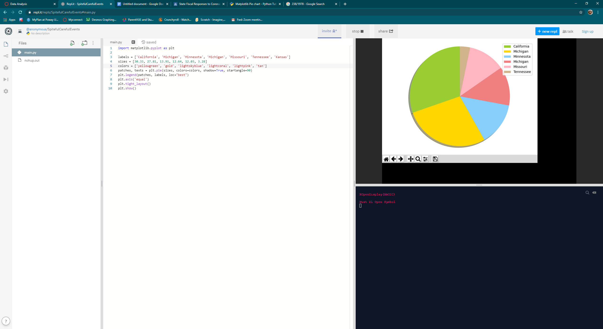

Portfolio
Home About Me Portfolio Board Game ReviewsThis website is my first work of coding.
Below is my game that I made in scratch. It has you piloting a space ship, and shooting incoming projectiles to survive. I made the game to test an idea I had for a system that randomly decided things, and i used this system to randomly decide intervals in which the incoming projectiles are spawned.
Below are pictures of my text to speech app. I got the idea for this after my partner and I saw the text to speech tool. We were interested in what we could do with such a tool, we ended up making a basic text to speech system with pre-written memes to be spoken out loud.


Below is my interactive fiction game. The game runs on python, and I had trouble writing it as there were unspecified differences between differing python systems. The story is about Rupert Mann, a person who gets mixed up with another by the same name by the local gang.
Below is an image of an altered Net Logo simulation that I found and worked on. The original simulation was about three "races" that fed off of one of the others creating a rock paper scissors situation. What I did to the simulation was remove the animal's ability to reproduce unless they had killed one of the others. This change allowed a specific species to reign on top and eliminate the rest.
.png)
Below is an image of my data analysis project. The question I chose was "which US state has set aside the most money for coronavirus releif efforts?" Based on data taken from the National Conference of State Legislatures, I took the top six states and placed them into a pie chart to compare their sizes. It seems that California has set aside the most at 600 Million enacted dollars.
